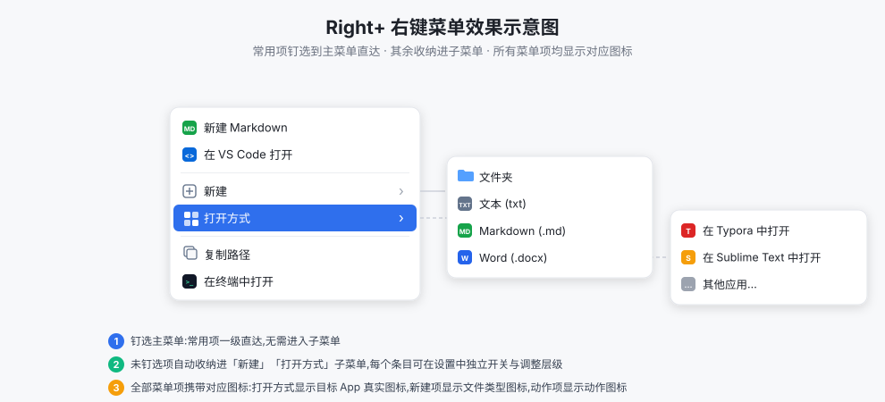

Right+ 采用 Swift 与原生 FIFinderSync API 构建，专注于轻量、零卡顿与纯粹体验。快速新建文件、常用 App 唤起、路径复制与目录直达终端，触手可及。

拒绝冗余庞大，每个功能都恰到好处
支持快速新建 Markdown、Word、Excel、PowerPoint、文本、Shell、Python 等文件，并支持自定义模版，同名自动递增命名防覆盖。
将 VS Code、Sublime、Typora、Xcode 等常用生产力工具钉选在右键菜单，支持智能过滤仅显示能打开当前目标的应用。
右键快速提取选中项完整 POSIX 路径或纯文件名。支持多选批量复制，自动按换行排布，写脚本和贴命令行更丝滑。
无需拖拽文件进终端，右键一键在默认终端或 iTerm2 中直接进入当前文件夹，智能判断文件所在父目录。
同时原生支持 Apple Silicon (M1/M2/M3/M4) 与 Intel 芯片。菜单能力走异步预热与缓存，彻底告别右键首开卡顿。
本地纯独立运行，不含任何联网请求、数据追踪与上报埋点。所有用户配置均保存在本机 App Group 中。
Right+ 采用开源 Ad-hoc 本地构建签名，初次运行只需简单一步信任
从 Releases 下载最新的 RightPlus-v*.zip，解压后将 RightPlus.app 拖入 “访达” -> “应用程序 (Applications)” 目录。
因为本应用由独立开发者本地构建（未加入高昂费用的 Apple 开发者计划公证），如果系统提示“无法打开，因为无法验证开发者”，请在终端 (Terminal) 中执行以下命令解除隔离属性：
双击打开 Right+，进入 macOS 系统设置 -> 隐私与安全性 -> 扩展 -> 访达扩展，勾选启用 Right+ 即可。
遇到使用问题？看看这里能否解决
macOS 的 FinderSync 扩展宿主有时会缓存扩展状态。请确保在系统设置中勾选了扩展，并在终端中执行 killall Finder 重启访达即可刷新生效。
完全不会。Right+ 是 100% 离线工作的工具，没有配置任何外部网络通信能力，所有操作仅限于本机文件系统与当前登录用户空间。
欢迎前往 RightPlus-App GitHub Issues 提交反馈或加入讨论。